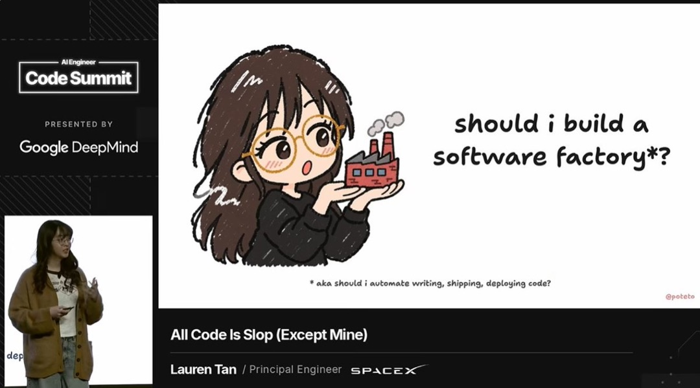
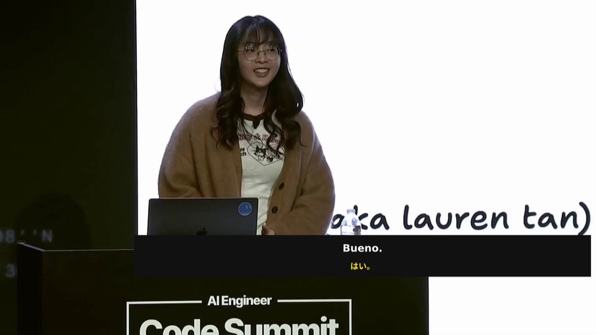
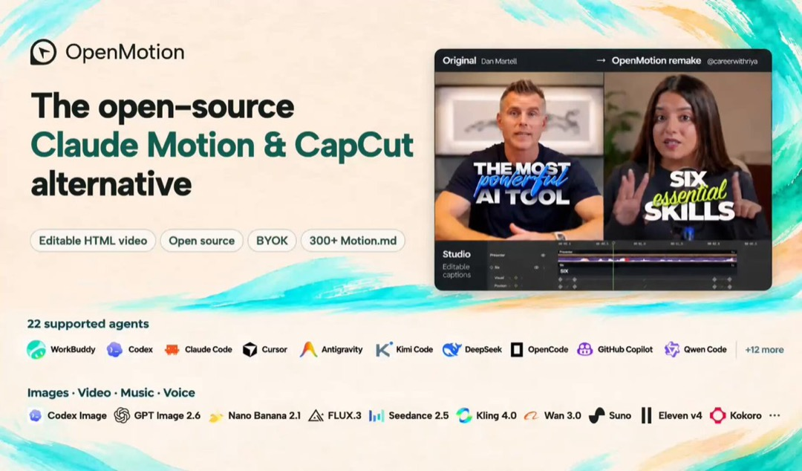
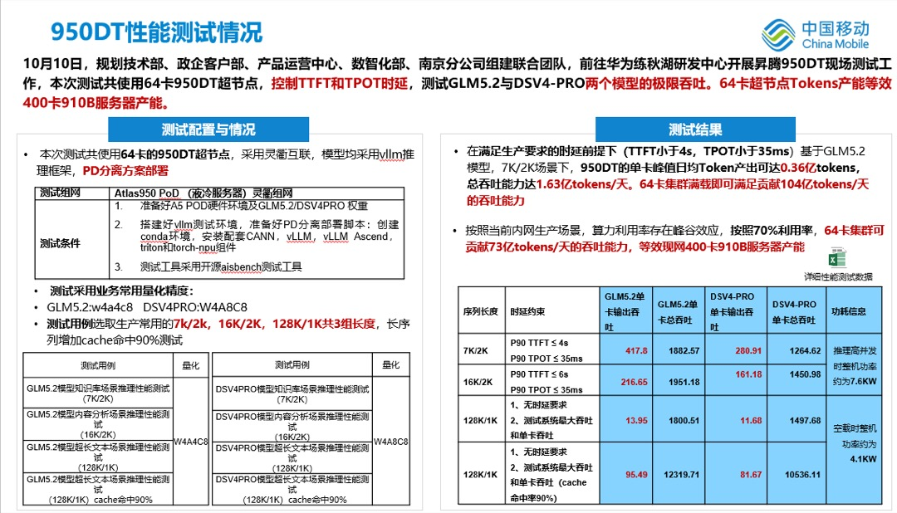
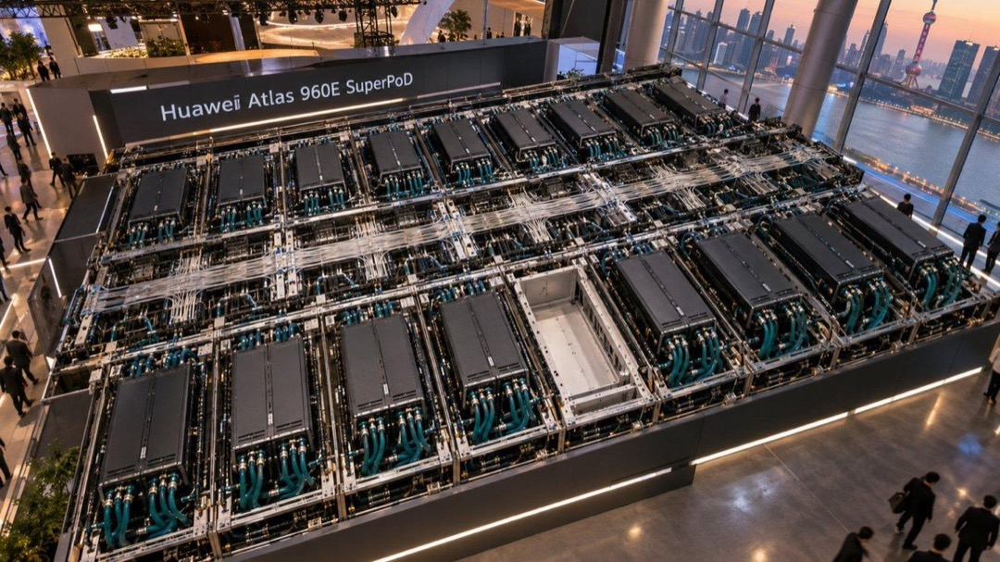

本期速览
02 GrokBot月产3000个PR自主合并
04 OpenMotion开源视频动效模板库
05 昇腾950DT推理每Token成本优势
06 工具参数校验应在执行层拦截
07 甲骨文取消腾讯70亿美元芯片租赁
01｜AI Coding约束交给代码和测试
来源（X） · @changchuan888 · 2026-11-17 16:45
熟练掌握土豆姐这套AI Coding工程方法
去北上广深找工作，月入低于3万，我给你补！！！
All Code Is Slop (Except Mine) 10条顶级干货：
1. AI Coding 最重要的，不是让AI写代码的速度越来越快，而是想办法让它一直能写出好代码。即使写错了，也能自己发现问题，自己改过来。
2. 代码库本身就是给AI投喂的知识库。代码库的质量，直接影决定AI生成代码的质量。让AI读屎山代码库，AI就直接写屎一样的代码。
3.不要总想着在靠提示词来告诉 AI 应该怎么做。能直接写进代码、变成硬性规则的，就不要只靠文字提醒。比如类型检查、Lint 规则、自动化测试。
4.不要以为AGENTS.md、CLAUDE.md是万能的。规则写得再多，Agent 也可能忽略，甚至理解过头。真正重要的约束，还是应该交给代码和工具。
5.不要让 Agent 只写代码。要让它写完后，自己启动项目、运行程序、看日志、调试bug。最好能像真人一样，打开页面，把整个功能操作一遍。
6.给 Agent 做一张产品功能地图。产品有哪些页面、每个页面有什么功能、用户怎么操作，都整理清楚。后续让AI测试功能的时候，就有依据，而不是靠猜。
7.接下来让AI写代码不是最重要的了，代码写出来只是第一步，能不能验证有没有问题，才是最重要的。土豆姐提到，有工程师每天70%的Token都花在验证上。
8.别一上来就搞多 Agent，也别急着把所有流程自动化。先把一个 Agent 的工作流程跑顺。如果一个 Agent 写出来的代码很垃圾很水，几十个Agent一起干活，只能干出一坨屎。
9.每次发现Agent搞错了，不要只是让它把这次问题改掉。最好想想，能不能从代码结构、规则或者测试上解决，让它下次根本没机会再犯同样的错误。
10.以后真正厉害的程序员，不是最会写代码、最会写提示词的，而是最懂怎么给AI搭环境、定规矩、做验证的人。
视频源地址：https://www.youtube.com/watch?v=O_zcc6Xl12g

02｜GrokBot月产3000个PR自主合并
来源（X） · @FinanceYF5 · 2026-11-17 17:08
GrokBot 工程师 Lauren Tan 在 AI Engineer Code Summit 上展示了自己的开发工作流。
每次 Agent 犯错，不是往提示词里加规则，而是把错误转成 Lint 检查规则。Agent 还会通过视频、截图和测试验证自己的工作。
她表示，这套方法让代码库保持整洁，也让 Agent 能自主合并大部分 PR。

03｜连续批处理让GPU不再等最慢请求
来源（X） · @LJL06019 · 2026-11-17 19:00
一个请求 2 秒跑完，另一个要 10 秒，快的那个跑完了也得等着，GPU 空转 8 秒。batch 里只要有一个长请求，整个 batch 的吞吐就被拖下来。
Continuous batching 把这个改了。请求跑完一个，立刻塞进来一个，不用等整个 batch 结束。GPU 一直有活干，不空转。
vLLM 就是靠这个起来的。静态批处理时代，GPU 经常在等最慢的那个请求。Continuous batching 一上，空转没了，吞吐直接上去。
思路很简单，把"等所有人到齐再开饭"改成"来一个吃一个"。效果直接，GPU 不空转。
和 prefix caching、speculative decoding、KV 量化一起，推理优化的四个杠杆齐了。
04｜OpenMotion开源视频动效模板库
来源（X） · @tuturetom · 2026-11-17 18:11
全网首个全栈 Claude Motion & 剪映最佳平替， 浓缩逆向最先进的设计和最好看的模板💥
历时 14 天47w 行代码，支持 100+ 顶尖公司的产品宣传片、300+ 动效版 DESIGN.md，152+设计系统，支持Codex/CC/DSH 等20+AI agent 🔥

05｜昇腾950DT推理每Token成本优势
来源（X） · @KELMAND1 · 2026-11-17 17:17
一、竞争度量从单卡性能转向每Token成本
950DT的现场测试显示，64卡超节点在GLM5.2模型7K/2K场景下，单卡总吞吐达到1882.57 tokens/s，单卡峰值日均产出0.36亿tokens，64卡满载日吞吐104亿tokens，70%利用率下贡献73亿tokens/天，等效400卡910B服务器产能。其百万tokens电耗为0.28千瓦时，仅为910B4的五分之一。单卡推理输出约为H200的1/1.27，差距仍然存在，但系统级产出效率已经显著缩小了制程代差所暗示的落差。
更关键的是Token经营测算。GLM5.2单台950DT月产能325.7亿tokens，按token计费收入可达10万元每台月，较裸金属出租提升18.6%，已经接近或跨过商业闭环门槛。DSv4 Pro在现行定价下token收入较裸金属低34%，无法实现商业闭环。这说明算力竞争的终点不在参数表，而在每Token成本与定价之间能否挤出正利润。
昇腾950DT的价值不在于全面超越H200，而在于让中国在制程受限条件下仍有一套推理经济性具备竞争力的系统级选项。

引用内容
Eason Mao☢ @KELMAND1
过去几年，全球AI竞争最受关注的是芯片。谁能制造出更先进的GPU，谁就掌握了AI发展的主动权。英伟达凭借CUDA软件生态、高性能GPU和高速互联网络，建立起了强大的市场优势。
但到了今天，算力竞争已经不再是简单的芯片竞赛。真正的较量，正在从一颗芯片扩展到一整套计算系统：芯片能算多快，芯片之间能否高效协同，软件能否充分发挥硬件性能，整个系统能否稳定运行，以及完成同样任务需要花多少钱。
这意味着，中国与英伟达的竞争，正在进入一个新的阶段。
一、英伟达的优势，远不止一颗芯片
以英伟达B300为例。单颗B300拥有270GB HBM3E显存，显存带宽约7.7TB/s，FP8计算能力约10 PFLOPS。8颗B300组成的HGX B300系统，FP8算力达到72 PFLOPS，显存总量约2.1TB。
如果进一步扩大到GB300 NVL72，系统就包含72颗Blackwell Ultra GPU，FP8算力达到720 PFLOPS，GPU显存总量约20TB，GPU互联总带宽达到130TB/s。
这些数字说明，英伟达真正厉害的地方，不只是GPU性能强，而是已经把芯片、显存、互联网络、软件和服务器整合成一套成熟的产品体系。
开发者可以直接使用CUDA以及围绕它建立的大量工具和软件。企业购买的不只是一批芯片，而是一套能够快速部署、稳定运行的计算平台。
这就是英伟达最难被复制的竞争壁垒。
二、中国正在走另一条路线：从芯片竞争转向系统竞争
中国目前最大的困难，是最先进芯片制造能力仍然受到限制，单颗国产AI芯片在性能、显存和能效方面，与英伟达最先进产品存在差距。
但中国没有把所有希望都押在单颗芯片上，而是尝试通过高速互联，把大量芯片组织成一个更大的计算系统。
华为的超节点就是这一思路的代表。
2026年7月，华为首次公开展示昇腾950超节点Atlas 950，现场展示的系统采用1024颗NPU，公布的FP8算力为1 EFLOPS，即1000 PFLOPS。华为还公布了256TB全局统一内存编址空间，以及超低时延的灵衢互联架构。
9月，华为又发布Atlas 960E超节点，公布的规划规格进一步提高到4096颗NPU、8 EFLOPS FP8算力。
这里需要强调：这些是华为公布的系统指标，并不等于已经在相同模型、相同精度和相同功耗条件下，实测超过英伟达GB300。
但它至少说明，中国已经不再局限于追赶单颗GPU，而是在探索另一种大型计算机架构：通过高速互联和统一内存管理，让成百上千颗芯片像一台计算机一样协同工作。
这条路线的意义在于，即使单颗芯片暂时落后，也可以通过系统架构、芯片数量和软件调度，缩小整体计算能力的差距。
三、真正的瓶颈，正在从芯片转向软件和系统效率
不过，芯片数量增加，并不意味着算力可以简单相加。
假设一家公司有1000名员工，如果每个人都很能干，但彼此之间无法沟通，工作效率未必比一个配合默契的100人团队高。
大型计算系统也是如此。
几百颗芯片同时工作，需要高速传输数据、协调任务、分配内存。一旦通信速度跟不上，芯片就可能因为等待数据而闲置。芯片越多，系统管理和通信的难度也越大。
这也是为什么英伟达的CUDA生态如此重要。它不仅提供编程工具，还包括大量经过长期优化的计算库、通信组件和开发框架。
中国要真正建立竞争力，就必须让国产芯片能够方便地运行主流模型，让开发者不必为每一种芯片重新编写大量程序，还要不断提高集群的实际利用率。
华为正在通过CANN、Mind系列以及开源社区适配来补齐这一环节。华为在2026年公布，昇腾生态已经覆盖90多个主流第三方开源项目，并推动CANN进入持续社区化开源阶段。
这说明国产算力的竞争已经从硬件制造延伸到软件生态。但软件生态需要开发者、用户和应用共同积累，不可能靠一次产品发布就完成。
四、中国的机会，还在能源和产业链
AI算力本质上是一种高度消耗电力的工业能力。
大型数据中心需要持续稳定的电力供应，还需要变电设备、液冷系统、光模块、服务器、电网调度和运维体系。算力中心不是把芯片放进机房、接通电源就能运行。
中国在电力设备制造、工业配套、通信基础设施和大型工程建设方面具有完整产业链优势。西部地区的风光资源，也为未来建设大型算力中心提供了条件。
但新能源发电具有波动性，不能简单地把风电、光伏装机容量等同于数据中心可持续获得的稳定电力。电网、储能、备用电源和跨区域调度，都是不可缺少的配套。
中国真正有机会形成的优势，是把芯片制造、服务器生产、通信网络、电力供应和数据中心建设结合起来，降低整套系统的建设和运行成本。
五、未来的算力竞争，将出现三个层次
第一层是高端芯片竞争。英伟达仍然领先，中国需要继续提升国产芯片的计算能力、显存容量、带宽和制造水平。
第二层是大型计算系统竞争。通过超节点、高速互联和统一内存管理，把大量芯片组织成高效率的计算系统。这是中国目前最值得投入、也最有可能形成差异化优势的方向。
第三层是商业成本竞争。最终用户不关心一颗芯片有多少PFLOPS，而关心同样的模型训练需要多少钱，生成一百万个Token需要多少电、多少时间，以及系统能否稳定运行。
因此，未来真正决定胜负的指标，不是厂商发布会上公布的峰值算力，而是实际任务吞吐量、系统利用率、单位电力产出和整体计算成本。
最后，中国未来不一定要复制英伟达，但必须建立自己的算力体系
英伟达的优势是多年积累形成的完整生态，中国不可能仅靠一代芯片或者一款超节点就实现全面超越。
但中国也不必完全复制英伟达的技术路线。
单颗芯片暂时存在差距，可以通过系统架构缩小；软件生态存在差距，可以通过开源和产业应用逐步积累；能源和制造环节，则可以发挥中国完整工业体系的优势。
当然，这些优势能否转化为真正的竞争力，还要看实际部署规模、运行效率和商业成本。
未来的算力竞争，可能不再是单纯比谁拥有最强的一颗芯片，而是比谁能够以更低的成本、更高的效率，持续提供更多真正可用的算力。
我们最终要造的，不一定是另一颗B300，而是一套能够在整体性能、可靠性和成本上与英伟达竞争的国产算力体系。

06｜工具参数校验应在执行层拦截
来源（X） · @zcswl7961 · 2026-11-17 19:29
那天上线前跑一遍客户月报回刷，写入工具少带了 dt 分区字段，工具没报错，任务就一直等着一个永远不会来的结果。日志里每一步都是绿的，人只能盯着看。
“它没崩，也没说缺什么，就那么安静地挂在那儿。”
追问下去才发现问题不在模型，在参数校验只写在 Prompt 里，执行层没再拦一次。后来他们把必填字段挪到工具注册那层，缺了直接失败并返回缺哪一项，四十分钟变成一眼能看懂的一行报错。
本地跑通和线上敢跑，中间隔的从来不是模型能力。你们的工具参数，是在提示词里写着，还是在执行层拦着？
07｜甲骨文取消腾讯70亿美元芯片租赁
来源（X） · @cxjwin · 2026-11-17 19:29
华盛顿压力下 甲骨文取消与腾讯价值约70亿美元芯片租赁协议
据英国《金融时报》报导，在特朗普政府的压力下，甲骨文公司取消了与腾讯签订的价值数十亿美元的芯片租赁合同，这表明为中国人工智能公司提供服务的美国云提供商所受压力日益加剧。